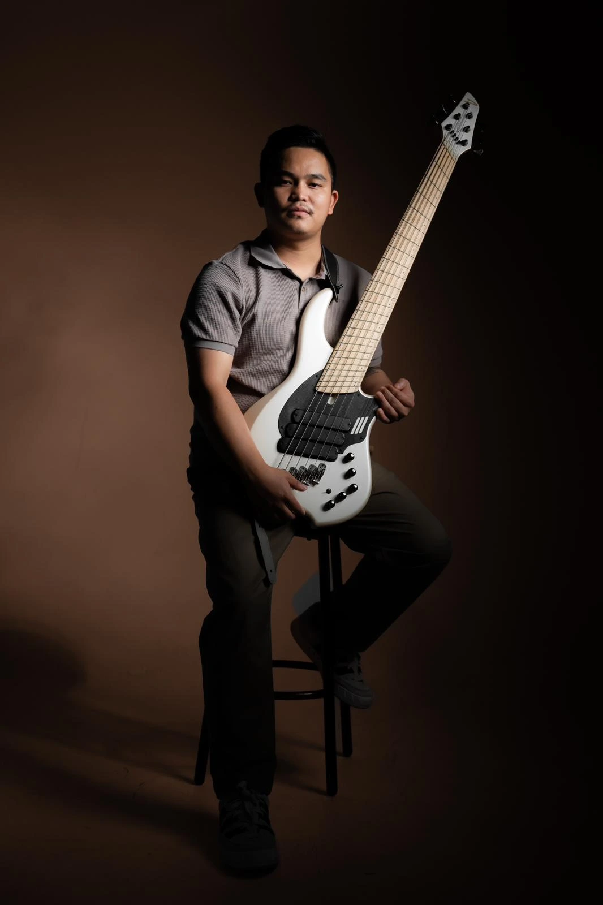
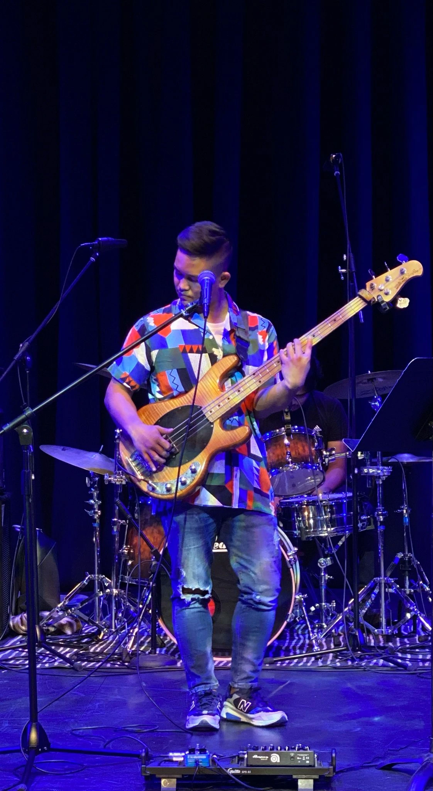
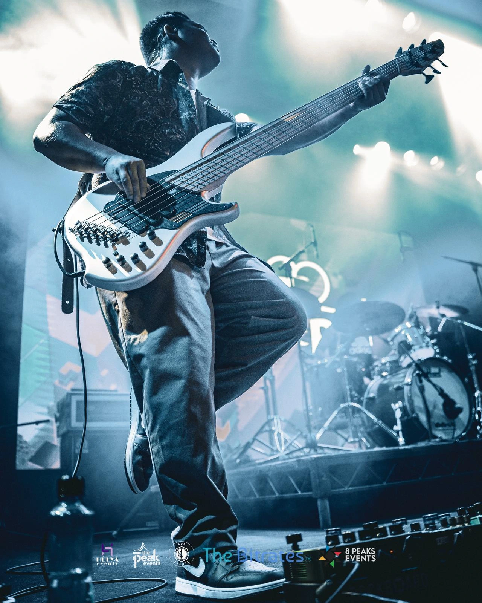
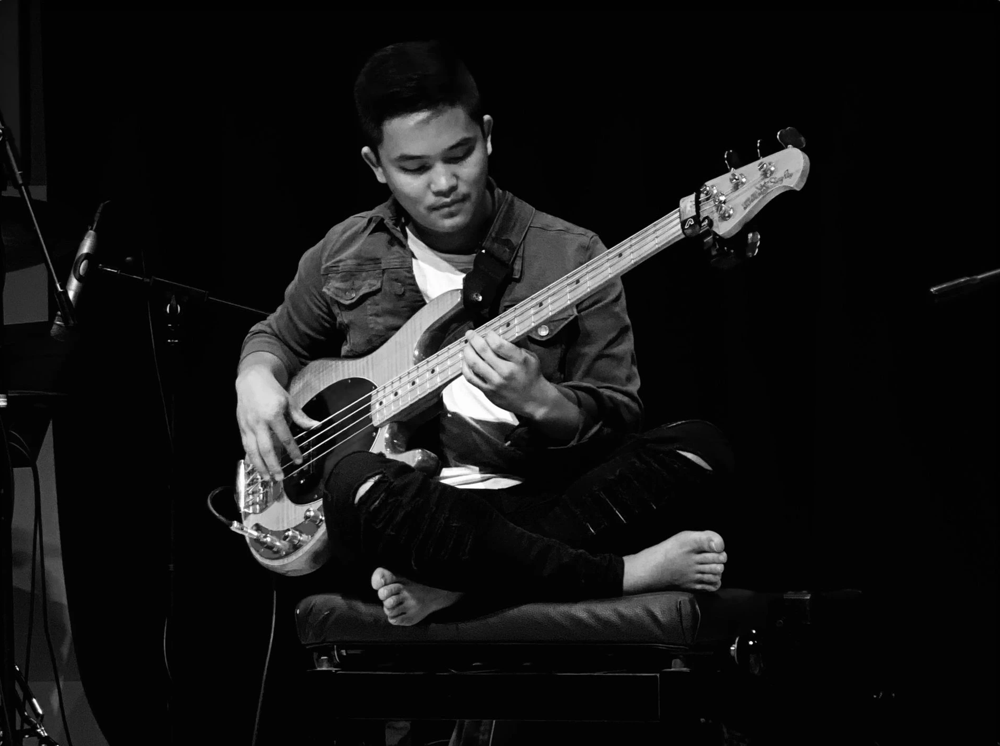
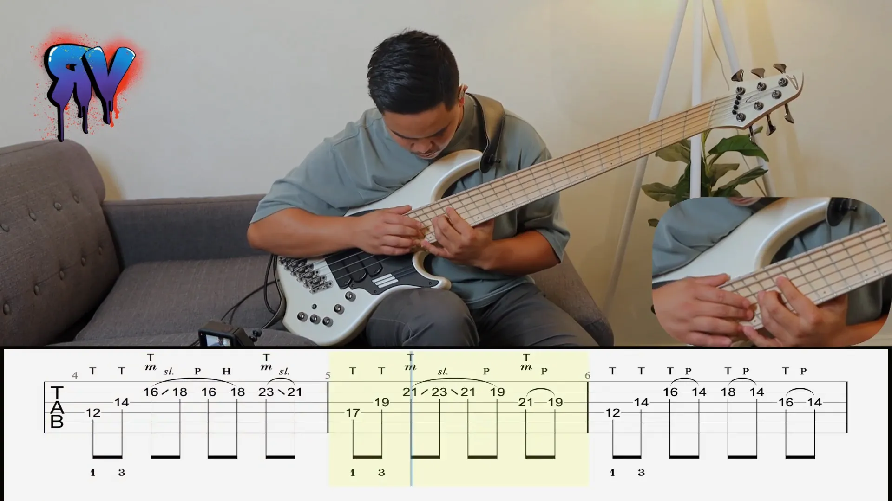

Bassist • Educator • Storyteller

Music with a Purpose
Bass isn't just an instrument for David Gautam—it's a gateway to storytelling, connection, and transformation. As a Bachelor of Music graduate and a master's in educational leadership student, David's passion extends beyond the stage, where he researches "Sound Perception and Musicality" to bridge the gap between music and learning.
From his early days at Nepal Music School to making history at the Sydney Opera House, David has carved a path as a dynamic performer and educator. Whether holding down deep grooves on electric bass or exploring the expressive landscapes of fretless and double bass, his playing is the foundation of every musical experience.
Guided by the philosophy of "Music with a Purpose," David's work with SoulCity Foundation and his experience with young learners reflect his belief in music as a force for change. With over 50 session recordings and significant performances across Sydney, his artistry continues to evolve and inspire.




Current
Researching "Sound Perception and Musicality" to bridge the gap between music and learning.
Graduated
Specialized in bass performance with honors.
Early Education
Foundational training in music theory and performance.
Historic Performance
Made history as one of the first Nepalese musicians to perform at this iconic venue.
Professional Work
Contributed to over 50 studio recordings across various genres.
Community Impact
Using music as a force for positive social change through educational programs.
Mastery of groove, tone, and technique across multiple genres including jazz, funk, and rock.
Exploring expressive landscapes with nuanced intonation and phrasing in jazz and classical contexts.
Developing innovative teaching methodologies that connect theory with practice for students of all ages.
David believes that music is more than entertainment—it's a powerful force for connection, education, and positive change in communities around the world.